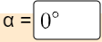
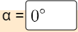
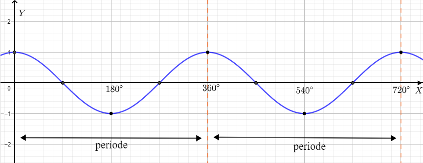

4. GRAFIK FUNGSI SINUS, KOSINUS, DAN TANGEN
A. Grafik Fungsi Kosinus: \(f(x) \space = \space cos \space x\) menggunakan tabel
Dalam membuat grafik fungsi \(f(x)= cos \space x\) dengan domain \(\left\{x|x° \leq x \leq 360°, x \space \epsilon \space R \right\}\) dengan membuat tabel nilai fungsi untuk nilai x yang istimewa. Perhatikan Tabel 3.2 berikut.
| \(y=sin \space x, 0≤x≤180°\) | |||||||||
| \(x\) | \(0°\) | \(30°\) | \(45°\) | \(60°\) | \(90°\) | \(120°\) | \(135°\) | \(150°\) | \(180°\) |
| \(y=cos \space x\) | \(1\) | \(\frac{1}{2}\sqrt{3}\) | \(\frac{1}{2}\sqrt{2}\) | \(\frac{1}{2}\) | \(0\) | \(-\frac{1}{2}\) | \(-\frac{1}{2}\sqrt{2}\) | \(-\frac{1}{2}\sqrt{3}\) | \(-1\) |
| \(y=sin \space x, 0≤x≤360°\) | ||||||||
| \(x\) | \(210°\) | \(225°\) | \(240°\) | \(270°\) | \(300°\) | \(315°\) | \(330°\) | \(360°\) |
| \(y=sin \space x\) | \(-\frac{1}{2}\sqrt{3}\) | \(-\frac{1}{2}\sqrt{2}\) | \(-\frac{1}{2}\) | \(0\) | \(\frac{1}{2}\) | \(\frac{1}{2}\sqrt{2}\) | \(\frac{1}{2}\sqrt{3}\) | \(1\) |
Tabel 3.2
Berdasarkan tabel di atas dapat dibuat grafik fungsi \(y = cos \space x\) Grafik umumnya seperti gambar dibawah ini,
Gambar 3.3
B. Menggunakan Lingkaran satuan
Dengan menggunakan lingkaran satuan ini kita akan lebih jelas melihat pergerakan grafik fungsi \(y = cos \space x\). Perhatikan Grafik Berikut ini
1. Gerakkan lah slider 
2. Lihatlah animasi pergerakan grafik fungsi \(y = sin \space x\) dengan melihat perubahan derajatnya
3. Kalian bisa mengisi derajat  dengan \(0≤x≤720°\) 4. Jika kalian sudah memahami grafik fungsi \(y = sin \space x\), maka lakukan lah aktivitas berikutnya
2. Lihatlah animasi pergerakan grafik fungsi \(y = sin \space x\) dengan melihat perubahan derajatnya
3. Kalian bisa mengisi derajat  dengan \(0≤x≤720°\) 4. Jika kalian sudah memahami grafik fungsi \(y = sin \space x\), maka lakukan lah aktivitas berikutnya
Animasi 3.7
Berdasarkan grafik fungsi sinus pada Animasi 3.7. sifat-sifat utama fungsi cosinus adalah sebagai berikut:
Grafik \(y=cos \space x\) kontinu dalam interval \(0° \leq x \leq 360°\)
Grafik \(y=cos\space x\) merupakan bayangan dari grafik \(y=sin\space x\) oleh translasi \(-90°\). Jadi, grafik \(y=cos\space x\) dapat diperoleh dengan menggeser grafik \(y=sin\space x\) ke kiri searah sumbu \(X\) sejauh \(90°\)
titik balik maksimum dalam interval \(0° \leq x \leq 360°\) di P(\(0°,1\)) dan P(\(360°,1\)), jadi nilai maksimum fungsi \(f(x)=cos \space x\) adalah 1 pada saat \(x= 0°\) atau \(x= 360°\)
titik balik minimum dalam interval \(0° \leq x \leq 360°\) di Q(\(180°,-1\)), jadi nilai mainimum fungsi \(f(x)=cos \space x\) adalah \(-1\) pada saat \(x= 180°\).
Kita dapat menyimpulkan bahwa:
Dapat kita simpulkan bahwa fungsi grafik \(y = cos \space x\) merupakan fungsi
berkala dengan periode 360°. artinya periode dihitung ketika dalam waktu 360° seperti Gambar 3.4

Gambar 3.4
Gambar 3.4
Mari Mencoba!
Jika kamu sudah memahami grafik fungsi \(y = sin \space x\) maka untuk memahami grafik \(y = cos \space x\) juga sama mari kita dalami lagi!
1. Perhatikan Fungsi Trigonometri di bawah ini
2. Berilah jawaban yang tepat pada kotak jawaban.
3. Lalu klik cek untuk mengetahui jawaban kamu benar atau salah. 4. Jika jawaban benar kkotak akan berwarna hijau dan salah berwarna merah.
2. Berilah jawaban yang tepat pada kotak jawaban.
3. Lalu klik cek untuk mengetahui jawaban kamu benar atau salah. 4. Jika jawaban benar kkotak akan berwarna hijau dan salah berwarna merah.
Sama seperti fungsi \(y = sin \space x\) hitunglah besar Amplitudo setiap Fungsi Trigonometri berikut:
a. \(y = 3 \space cos \space x \space \iff A \space=\) b. \(y = -2 \space cos \space x \space \iff A \space=\)
a. \(y = 0,5 \space cos \space x \space \iff A \space=\)
1. Perhatikan Fungsi\Grafik Trigonometri di bawah ini
2. Berilah jawaban yang tepat pada kotak jawaban.
3. Lalu klik cek untuk mengetahui jawaban kamu benar atau salah.
4. Jika jawaban benar kkotak akan berwarna hijau dan salah berwarna merah.
2. Berilah jawaban yang tepat pada kotak jawaban.
3. Lalu klik cek untuk mengetahui jawaban kamu benar atau salah.
4. Jika jawaban benar kkotak akan berwarna hijau dan salah berwarna merah.
Sama seperti aktivitas 2 pada fungsi \(y = sin \space x\). Hitunglah besar periode setiap Fungsi Trigonometri/gambar grafik \(y = cos \space x\) berikut:
a.
 \(\iff \space periode = \) °
\(\iff \space periode = \) °b. \(y = cos \space 6x \space \iff \) periode = °
Isilah jawaban dibawah ini dengan benar!
Kita ketahui bahwa betuk umum dari fungsi cosinus adalah \(y= a \space cos \space b(x-c)+d\). maka tentukanlah:
1. Perhatikan Fungsi\Grafik Trigonometri di bawah ini
2. Berilah jawaban yang tepat pada kotak jawaban. Jawaban yang tidak ada maka bisa ditulis (-)
3. Lalu klik cek untuk mengetahui jawaban kamu benar atau salah.
4. Jika jawaban benar kkotak akan berwarna hijau dan salah berwarna merah.
2. Berilah jawaban yang tepat pada kotak jawaban. Jawaban yang tidak ada maka bisa ditulis (-)
3. Lalu klik cek untuk mengetahui jawaban kamu benar atau salah.
4. Jika jawaban benar kkotak akan berwarna hijau dan salah berwarna merah.
a.

Gambar 3.5
\(\space a = \) \(; \space b = \) \(; \space c = \) \(; \space d = \)b. fungsi \(f(x)=2 \space cos (3x+90°)\), tentukan:
\(Amplitudo = \) \(Periode = \)
c. Perhatikan gambar dibawah ini. Terdapat grafik bantu untuk memudahkan menjawab

\(\space a = \) \(; \space b = \) \(; \space c = \) ° \(; \space d = \) ° \(; Amplitudo = \) \(; Periode = \) °